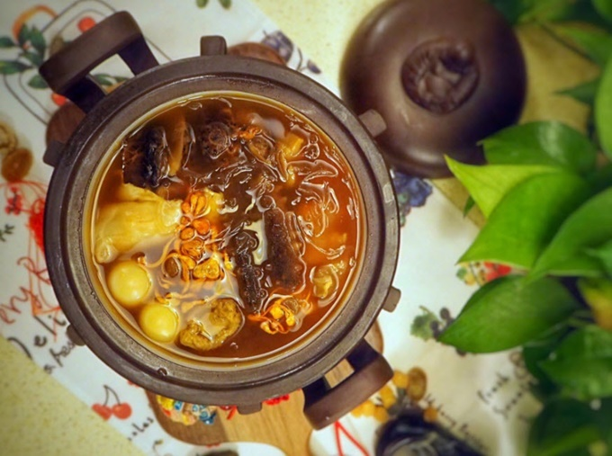

- 'Phật nhảy tường' - món ăn bổ dưỡng phải nấu ba ngày mới xong Để nấu được món ăn trứ danh này, bạn phải chuẩn bị nguyên liệu thật kỹ và hầm trong nhiều giờ. Cánh hoa sen chiên giòn khác lạ của mỹ nữ Trung Quốc Mỹ nữ Trung Quốc dạy làm dầu nấm mối ăn kèm mì nước "Phật nhảy tường" thực chất là súp vi cá của người Phúc Kiến, món ăn bổ dưỡng do một đầu bếp trong phủ của quan chức cấp cao địa phương sáng chế vào thời nhà Thanh (1644 - 1912). Đây là một trong những món được xếp vào hàng "cao lương mỹ vị" trong ẩm thực Trung Hoa bởi mùi vị đa dạng mà tinh tế đến nỗi dân gian truyền hai câu thơ ngụ ý đến người tu hành cũng không thể cưỡng lại được: "Đàm khải huân hương phiêu tứ lân/Phật văn khí thiền khiêu tường lai" (tạm dịch: Mở nắp vung, mùi hương thơm lừng bay khắp xóm/ Phật ngửi được, liền bỏ thiền nhảy tường sang).
- Được chế biến công phu từ những nguyên liệu thượng hạng như vi cá mập, hải sâm, bong bóng cá, gân nai, kỳ tử... nên Phật nhảy tường loại "xịn" chỉ bán trong những nhà hàng hạng sang và có giá rất đắt, không phải ai cũng có thể ăn được. Tuy nhiên bạn vẫn có thể tự chế biến món này ở nhà theo công thức của Lý Tử Thất - cô nàng nổi tiếng với các video hướng dẫn nấu các món ăn dân dã với chi phí rẻ hơn mà chất lượng không tồi.
- Trước tiên, bạn cần phải ngâm bào ngư và liêu sâm (một loại hải sâm) khô trong hai ngày cho mềm, đàn hồi, dễ ăn.
- Sườn heo, móng heo, vịt già, gà núi, dạ dày heo, mề vịt chặt khúc, đem luộc sơ để lọc bỏ chất bẩn.
- Cho hỗn hợp thịt vào nồi đất (hoặc nồi gang) hầm chung với hành lá, thỉnh thoảng vớt bỏ váng dầu.
- Sau 6 tiếng đồng hồ thì gạn bỏ xương, chỉ lấy nước làm nước hầm.
- Vi cá, nấm dạ dày, da cá, hến khô ngâm trong nước ấm cho nở.
- Chiên gân heo và bong bóng cá rồi ngâm nước ấm cho mềm.
- Chân giò hun khói thái lát mỏng, trứng bồ câu luộc bóc vỏ. .
- Trước tiên, xếp tất cả nguyên liệu ngay ngắn vào trong một nồi đất thường dùng để sắc thuốc Bắc.
- Sau đó cho nước nước hầm từ nhiều loại thịt và đặc biệt là rượu hoa điêu, loại danh tửu Trung Quốc có gốc từ rượu Thiệu Hưng, tỉnh Chiết Giang vào nồi, lót một lớp lá sen trước khi đậy vung lại để giữ chất.
- Canh lửa nhỏ hầm suốt hai tiếng là xong
Ngoài độ ngon khó cưỡng, món ăn được chế biến công phu này còn rất bổ dưỡng đến nỗi các gia đình quý tộc cũng thỉnh thoảng mới dùng vào mùa đông vì món bổ thường mang tính nhiệt, có thể gây chảy máu cam nếu ăn vào mùa hè. Ở TP HCM, bạn có thể tìm mua Phật nhảy tường trong các nhà hàng tại khu người Hoa, quận 5. Giá khoảng 130.000 - 700.000 đồng/thố tùy loại.
- Ngày/nơi sinh: 6 tháng 7, 1990 (30 tuổi), Miên Dương, Trung Quốc
- Tên đầy đủ: Li Ziqi
- Quốc tịch: Cộng hòa Nhân dân Trung Hoa
- Năm hoạt động: 2017–nay
- Lượt đăng ký: 12,5 triệu; (28 tháng 9 năm 2020)
- Nghề nghiệp: YouTuber, blogger về ẩm thực